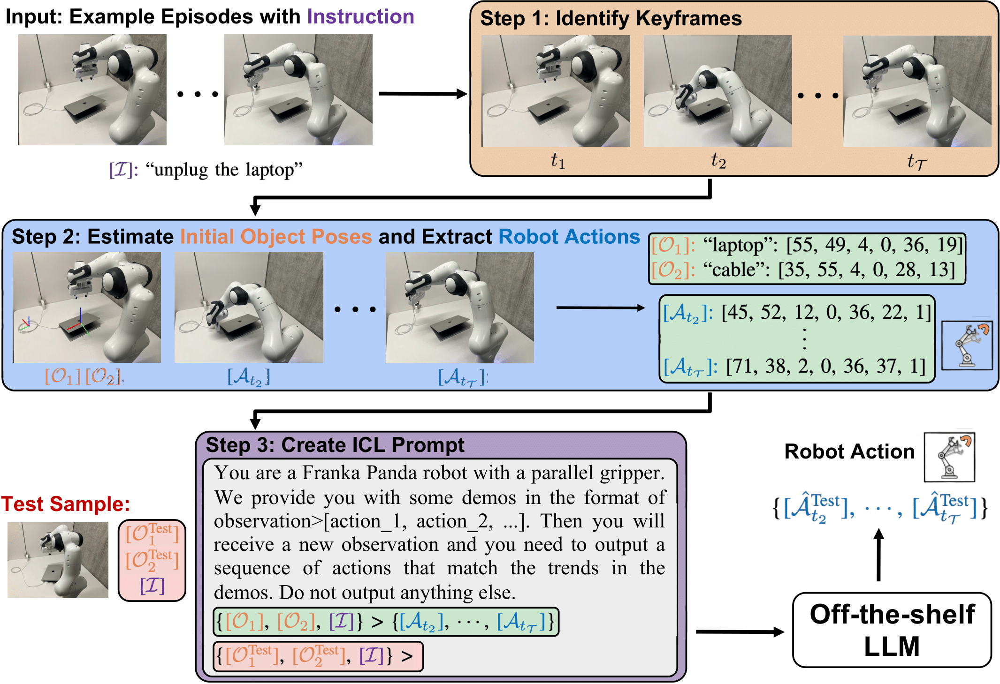

|
Dantong Niu I am a second-year Ph.D. student advised by Prof. Trevor Darrell at UC Berkeley. I develop vision-language models for robotics. |
{kind=link}
Selected PublicationsI am fortunate that my PhD research unfolds in an era where the explosion of groundbreaking LLMs and VLMs is revolutionizing robotics learning with unprecedented possibilities. |
|  |
Yida Yin*, Zekai Wang*, Yuvan Sharma, Dantong Niu, Trevor Darrell, Roei Herzig ICRA 2025 project page / code / paper |

|
Dantong Niu*, Yuvan Sharma*, Giscard Biamby, Jerome Quenum, Yutong Bai, Baifeng Shi, Trevor Darrell†, Roei Herzig† Conference on Robot Learning (CoRL), 2024 project page / code / paper We propose LLARVA, a model trained with a novel instruction tuning method that leverages structured prompts to unify a range of robotic configurations and introduces the concept of visual traces to further align the vision and action spaces. |

|
Dantong Niu*, Xudong Wang*, Xinyang Han*, Long Lian, Roei Herzig, Trevor Darrell IEEE Conf. on Computer Vision and Pattern Recognition (CVPR) , 2024 project page / code / paper We present U2Seg, a unified framework for Unsupervised Universal image Segmentation that consistently outperforms previous state-of-the-art methods. |